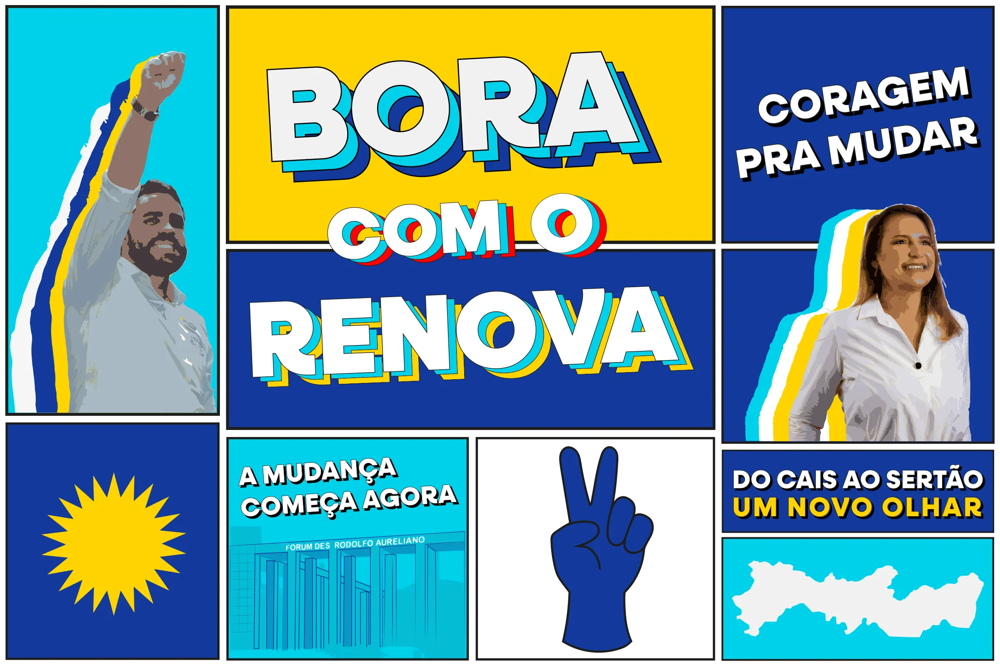
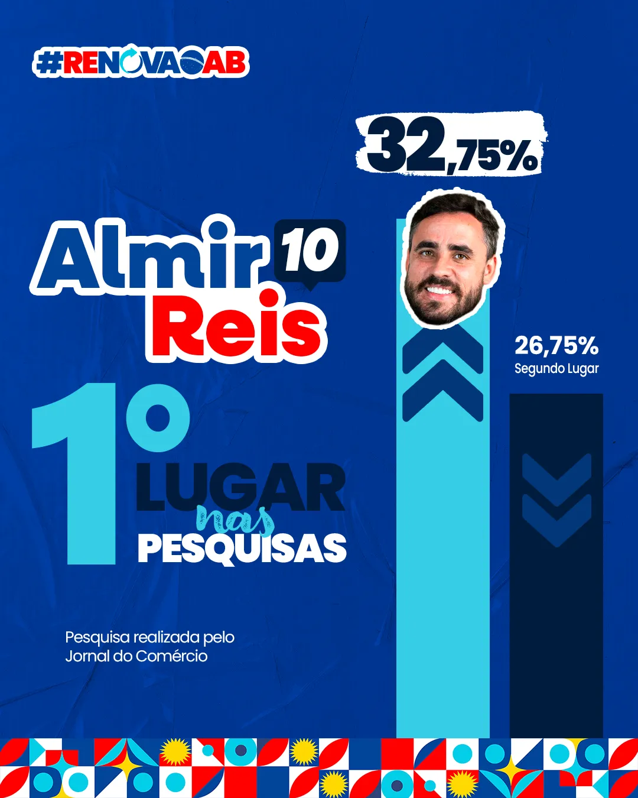
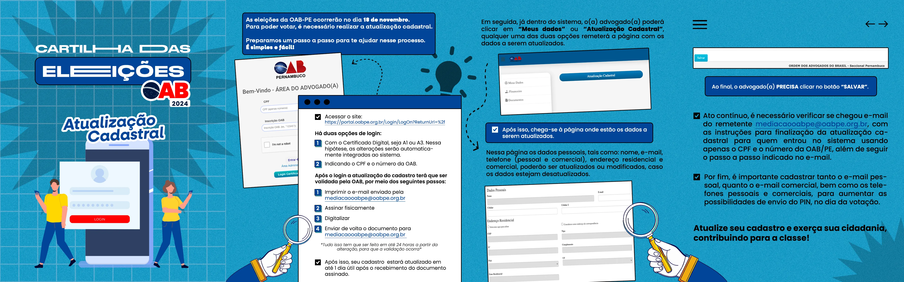
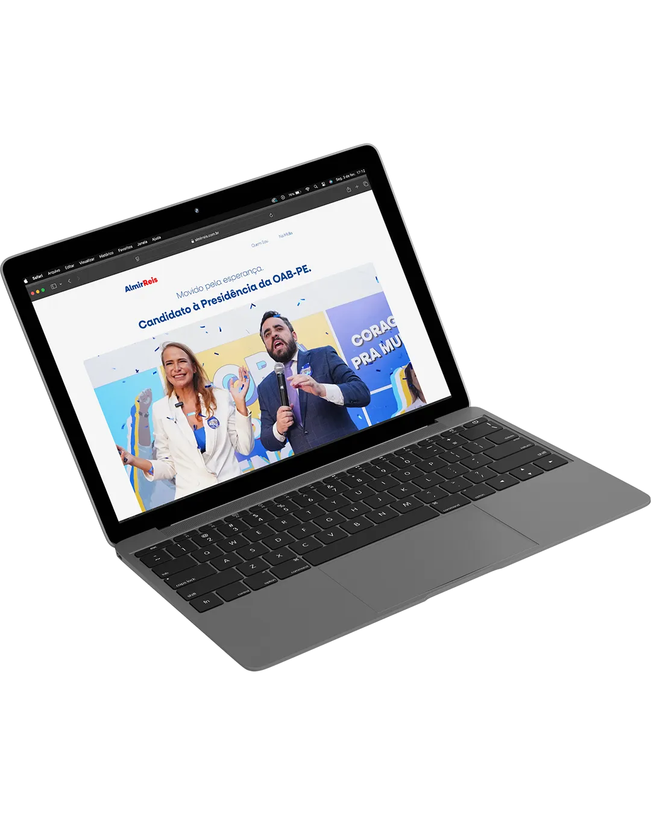
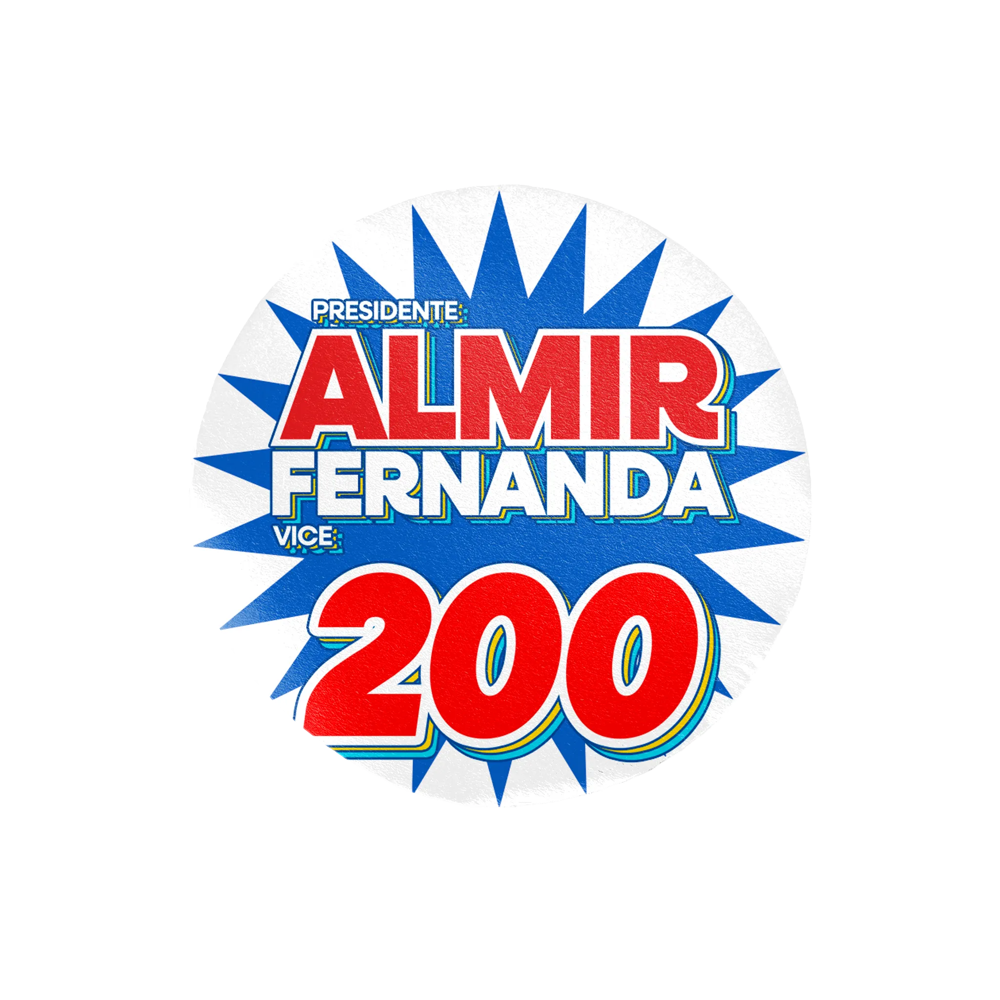
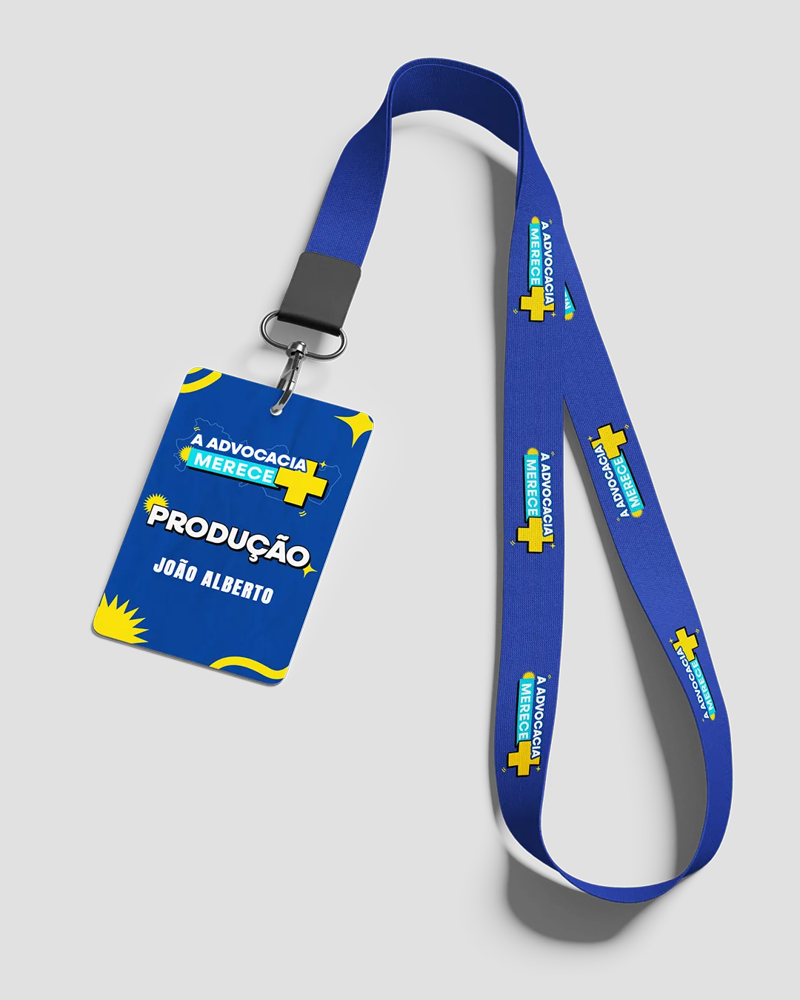
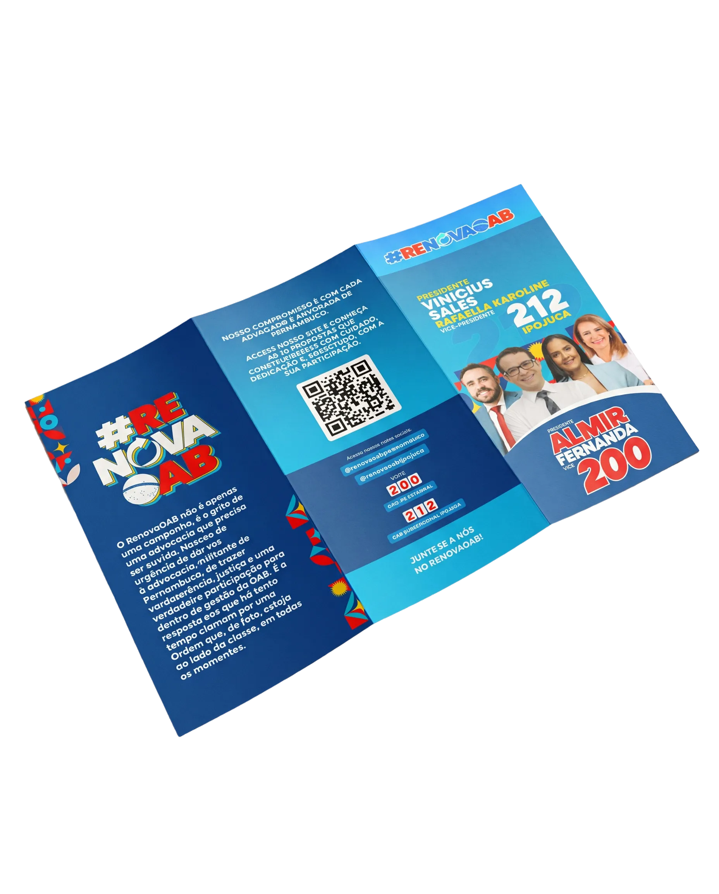

Campanha
OAB Pernambuco 2024.
Identidade visual e materiais de campanha para a presidência da OAB Pernambuco em 2024, com desdobramentos digitais, impressos e presenciais.

Identidade visual para uma campanha completa.
A campanha para a presidência da OAB Pernambuco em 2024 exigiu uma comunicação visual consistente, capaz de funcionar em diferentes formatos, canais e momentos da campanha.
Fiquei responsável pela criação da identidade visual e pelo desenvolvimento dos principais materiais gráficos, tanto digitais quanto impressos, garantindo unidade entre redes sociais, WhatsApp, email marketing, website, materiais de rua, eventos e comitê.
O projeto envolveu desde a construção da linguagem visual da campanha até a adaptação dos materiais para diferentes pontos de contato, mantendo clareza, reconhecimento e impacto visual.
// Escopo do projeto
Peças online.






Aplicações.





VAMOS
CONVERSAR?
Quer desenvolver uma campanha, site ou identidade visual? Fale comigo.
Fale Comigo →